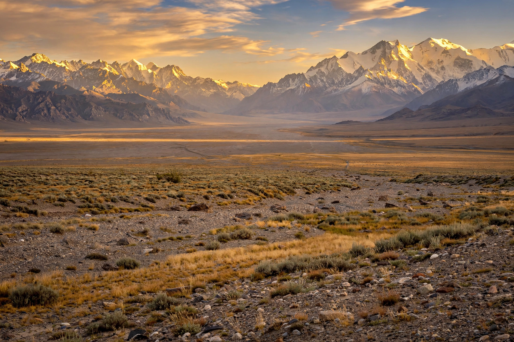

From Wikipedia, the free encyclopedia

| Dzungaria | |
|---|---|
| Location | Northern Xinjiang, China |
| Bounded by | Altai Mountains (north), Tian Shan (south) |
| Key feature | Dzungarian (Junggar) Basin, Gurbantünggüt Desert |
| Named for | The Dzungar Khanate |
Dzungaria (also spelled Junggaria or Zungharia) is a geographical subregion in northern Xinjiang, China. It is a broad basin bounded by the Altai Mountains to the north and the Tian Shan range to the south, opening westward through the Dzungarian Gate, a mountain pass into Kazakhstan that has served for millennia as a corridor between the Eurasian steppe and China. The region takes its name from the Dzungar Khanate, the last nomadic empire of the steppe.
The centre of Dzungaria is the Dzungarian (Junggar) Basin, much of it occupied by the Gurbantünggüt Desert, the second-largest desert in China. The basin is rich in oil and gas — the Karamay oilfield, discovered in 1955, was one of China's first major fields — and in coal. The regional capital Ürümqi lies on the southern rim of the basin, and other cities include Karamay, Shihezi and Altay. The Eurasian pole of inaccessibility, the point on land farthest from any ocean coastline, lies in this desert.
Dzungaria was the heartland of the Dzungar Khanate, a confederation of Oirat Mongols that dominated the steppe in the 17th and early 18th centuries before being destroyed by the Qing dynasty in the Dzungar conquest of the 1750s, an episode accompanied by the near-extermination of the Dzungar people. The region was then incorporated into the Qing province of Xinjiang. The name survives in zoology: the Djungarian hamster (Phodopus campbelli), a popular pet, originates from these steppes.